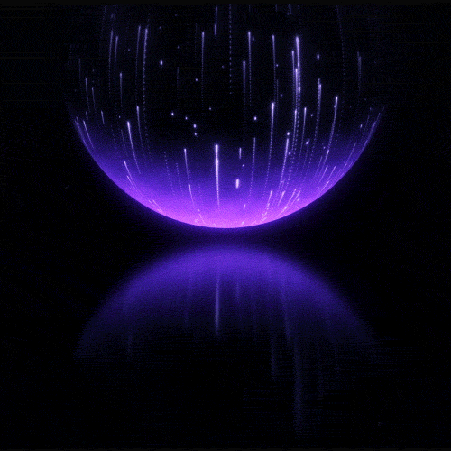

✦ Data Science · Estrellas · Código
StarsCode
Plataforma interactiva para dominar Data Science a través del análisis de datasets estelares. Aprende a procesar, visualizar y entender el universo con código.

Plataforma interactiva para dominar Data Science a través del análisis de datasets estelares. Aprende a procesar, visualizar y entender el universo con código.